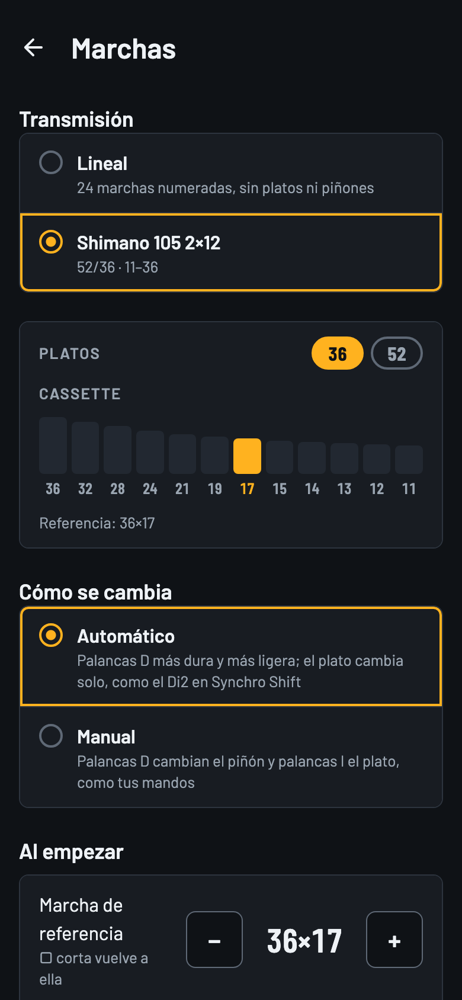
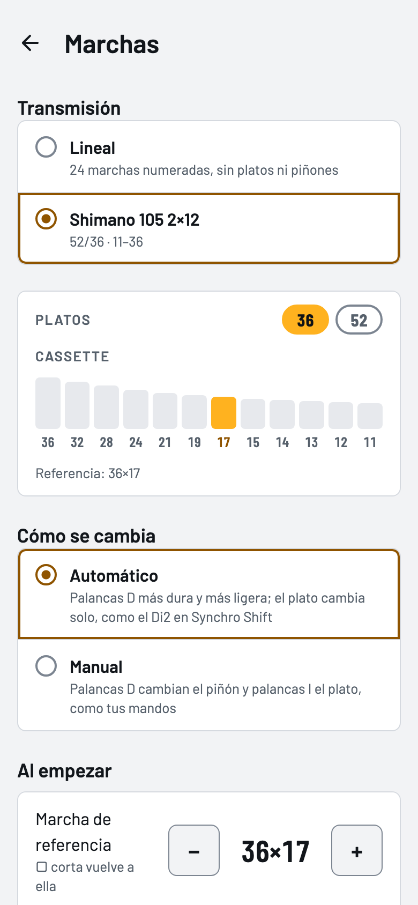
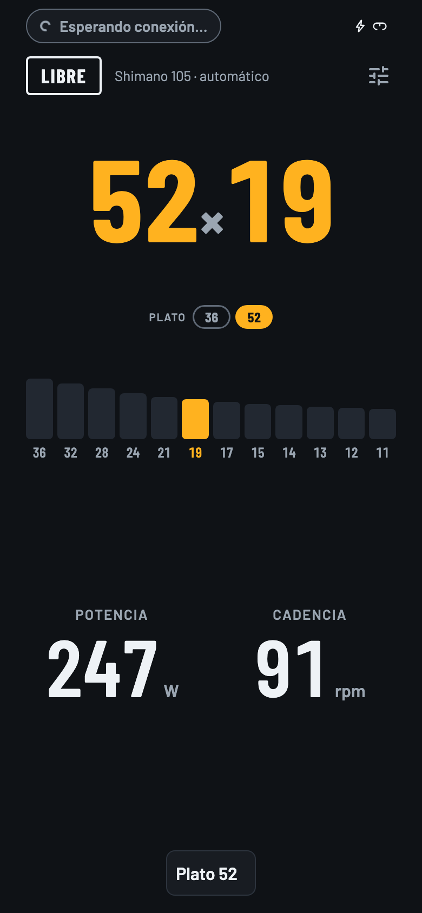
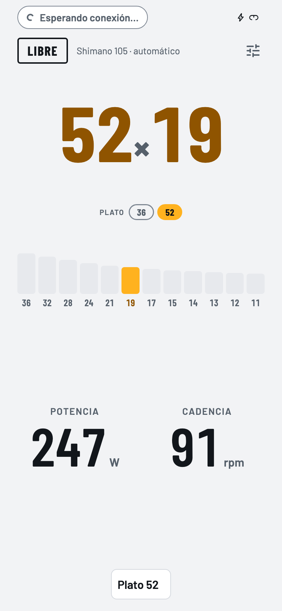

Marchas virtuales
Cambios de marcha en un rodillo que no los tiene
Los botones del Square cambian de marcha en el Neo. La app traduce cada marcha en más o menos resistencia, con un modelo simple o uno físico.
- Transmisión lineal de 24 marchas o la de una bici real (de momento, solo la mía: Shimano 105 2×12).
- Cambio de plato automático o manual, con los topes de la transmisión.
- Las palancas se pueden comportar como las de un grupo inalámbrico (probado con Shimano Di2).



